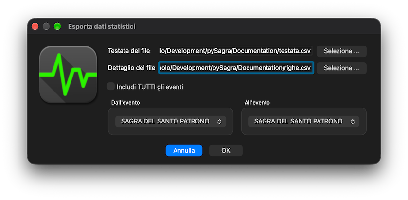

Esporta dati statistici
Scrive gli ordini su due file CSV, da aprire con un foglio di calcolo:

- Testata del file: il file con una riga per ogni ordine (data, ora, turno, cassa, consegna, tavolo,
cliente, coperti, importi).
- Dettaglio del file: il file con una riga per ogni articolo ordinato (reparto, articolo, varianti,
quantità, prezzo, importo).
- Dall'evento e All'evento: gli eventi da esportare, oppure Includi TUTTI gli eventi.
I campi sono separati dal punto e virgola e i numeri usano il separatore decimale della lingua dell'utente.
Se qualcosa va storto, per esempio un file che non si può scrivere, la finestra resta aperta per correggere e riprovare.